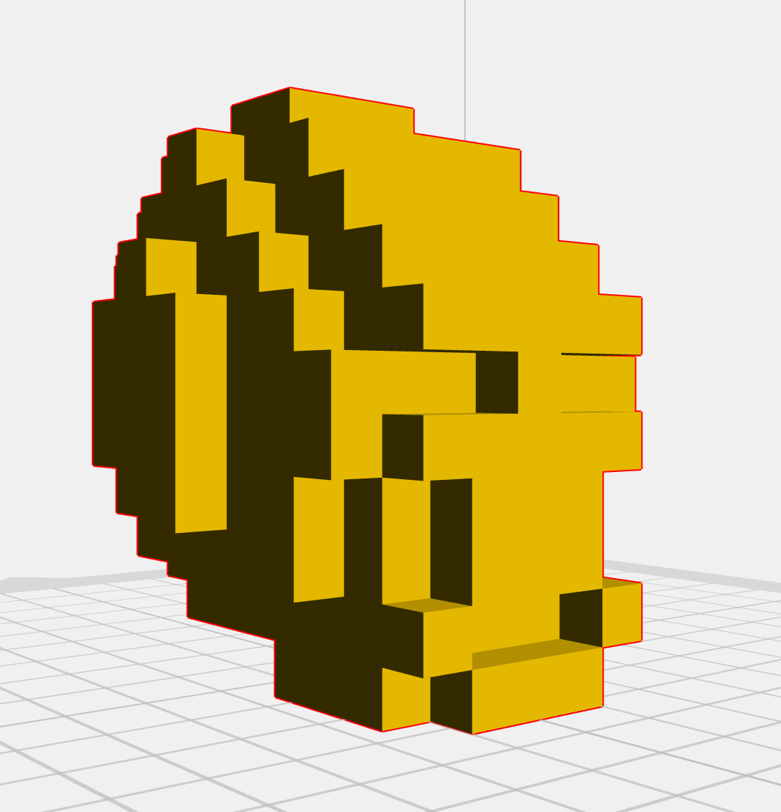
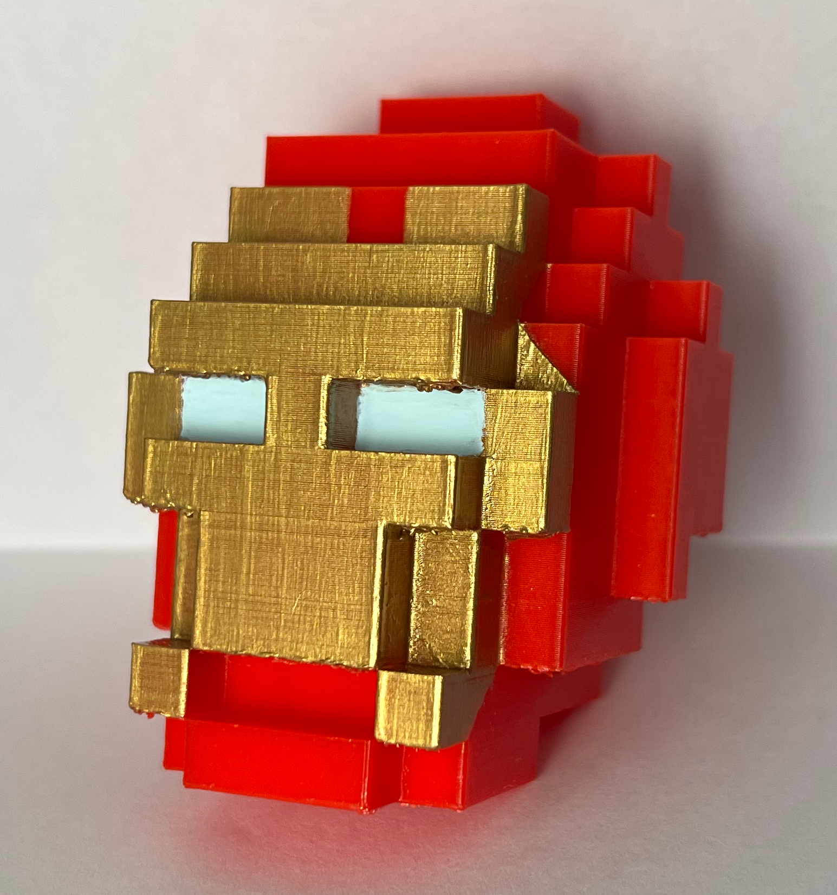
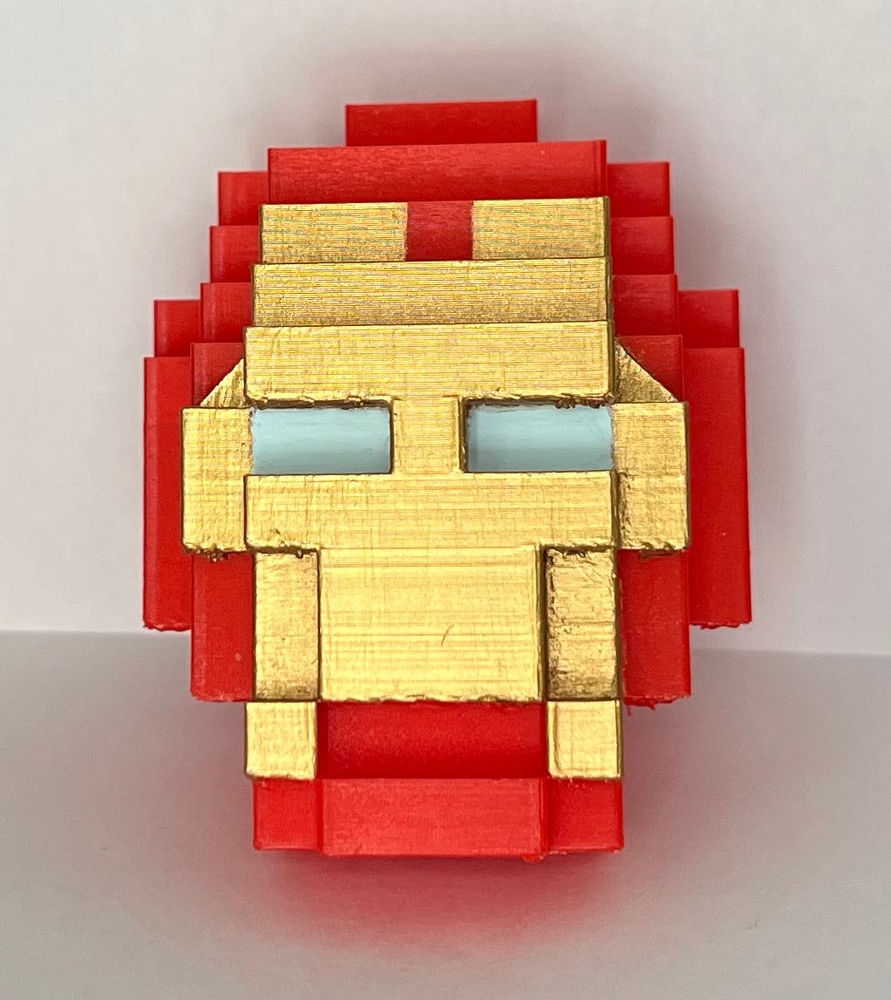
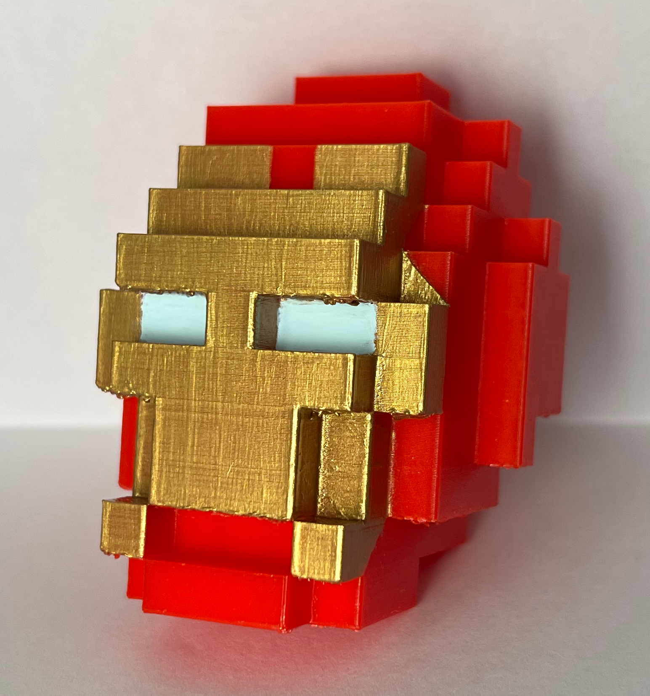
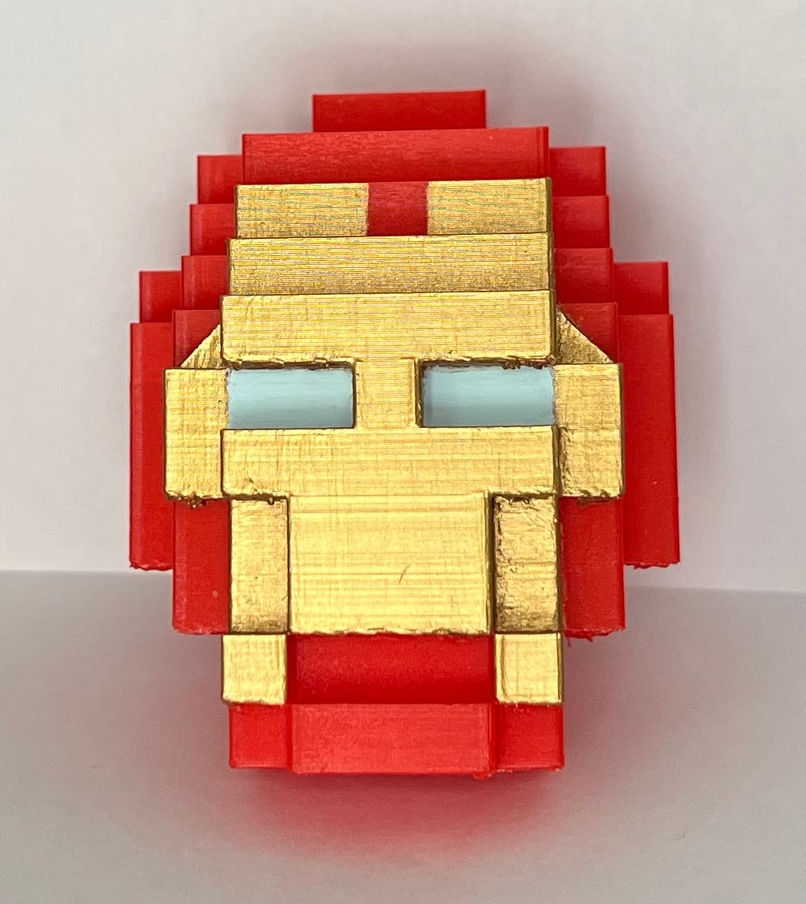
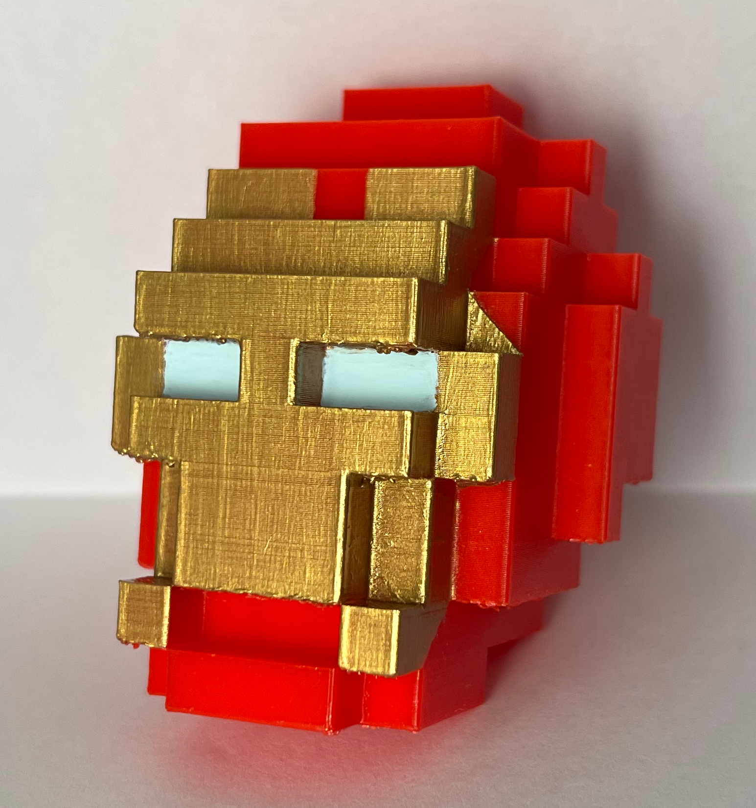
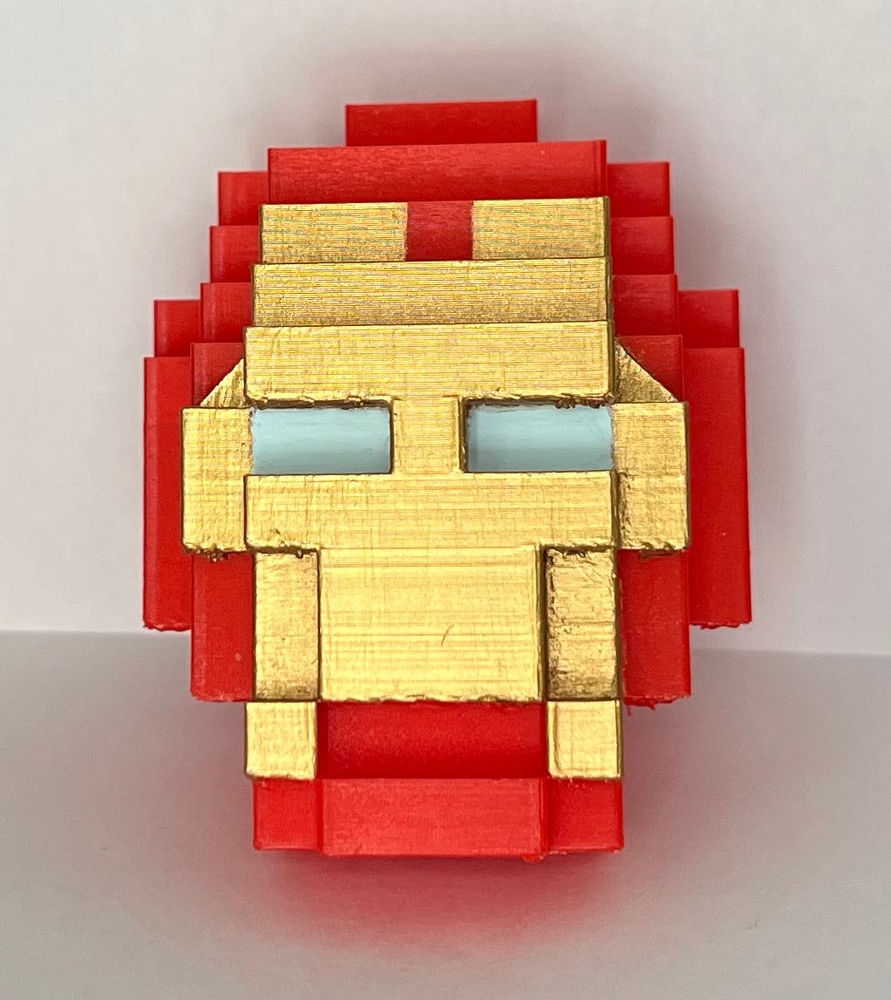

Iron Man
3D Printing (2023)
Art 75 SJSU


 






The objective of this project was to export the Minecraft Sculpture as an STL file and prepare it for a 3D print. The softwares used were Mineways to create the STL file and FlashPrint to prepare the print with scaffolding. A small draft print was done first to determine how the sculpture should be rebuilt if needed. Then, a final print was done much larger to show the details. My final print of the Iron Man helmet took alomst 7 hours to print and it came out to be 3 inches tall. I finished my sculpture by filing down the rough edges, coating it with a clear primer spray paint, and painting it with acrylic paint.